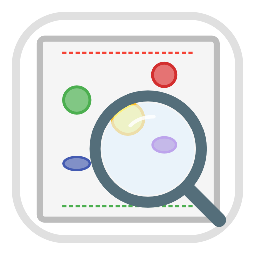
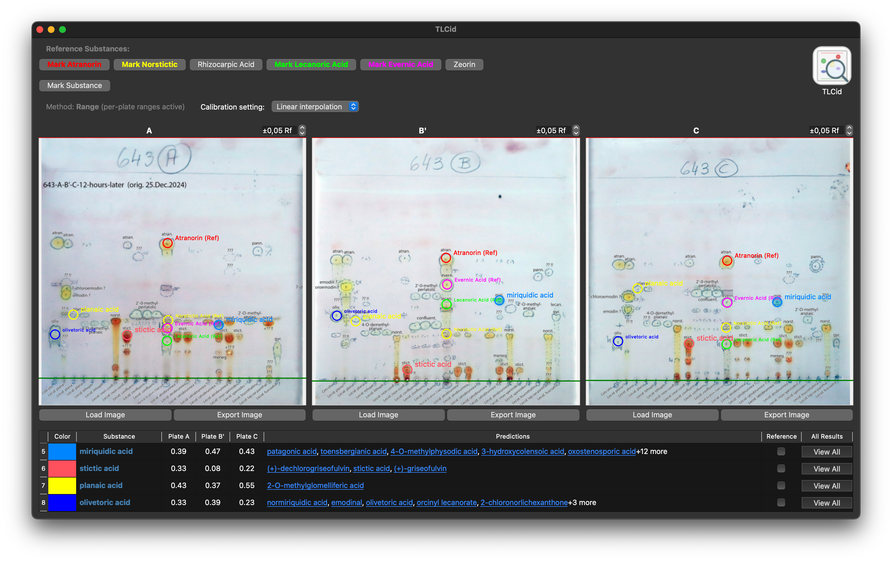

Purpose
Analyze TLC data, compare observed Rf values, and inspect likely substance candidates quickly.

A desktop tool for analyzing TLC plates and supporting lichen substance identification.
Analyze TLC data, compare observed Rf values, and inspect likely substance candidates quickly.
Predict lichen species based on substance profile.
The tlcid-database project provides and maintains the underlying database. Contributions welcome!
TLCid is a desktop application for analyzing TLC (Thin Layer Chromatography) plates, designed specifically for identifying lichen substances. It lets you load plate images, mark reference lines and spots, and predict substances based on Rf values against a built-in reference database.

Analysis → Predict species to identify lichens from the substance profile.Loading latest TLCid release…
Loading latest database release…
You can also browse always-current release pages: TLCid latest and Database latest.